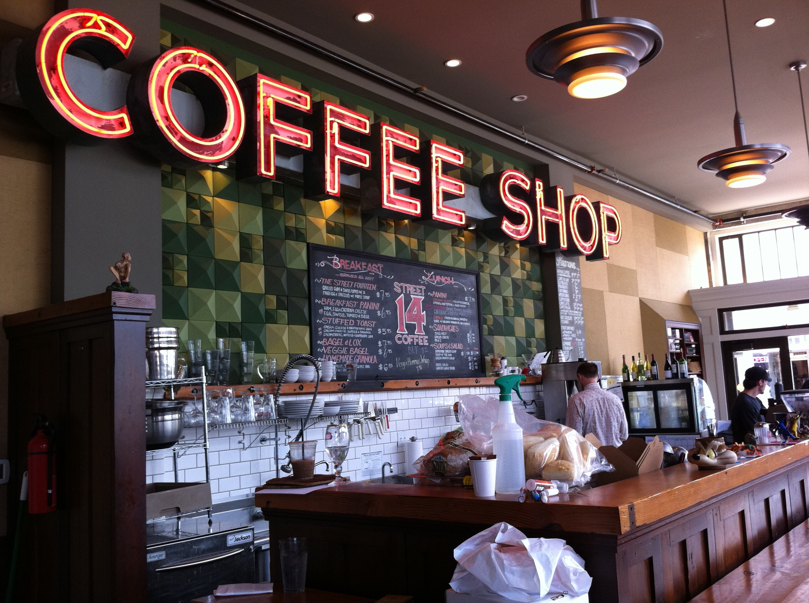
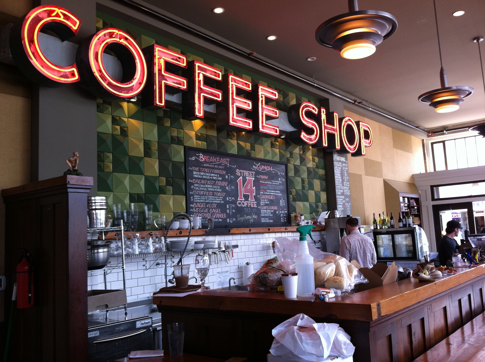

Historia do Cafe
bem vindo a cafeteria
Embora a planta tenha origem africana, foi no Iêmen, região oeste da Arábia, que ela começou a ser cultivada. A história do café, aliás, começa pela criação do nome, que tem origem árabe. Lá a planta era conhecida como Kaweh e a bebida foi denominada como Kahwah ou Cahue, que significa Força.
Saindo da Arábia, o café foi levado diretamente para o Egito, ainda no século XVI e um pouco mais tarde, chegou a Turquia. Já na Europa, ele chegou no século XVII e foi produzido, primeiramente, na Inglaterra e na Itália. Lá o café era consumido por todas as classes sociais, incluindo os intelectuais da época.
 


telefone: (11) 995265668 | 44852723
email: contato@cafeteriaonline.com.br